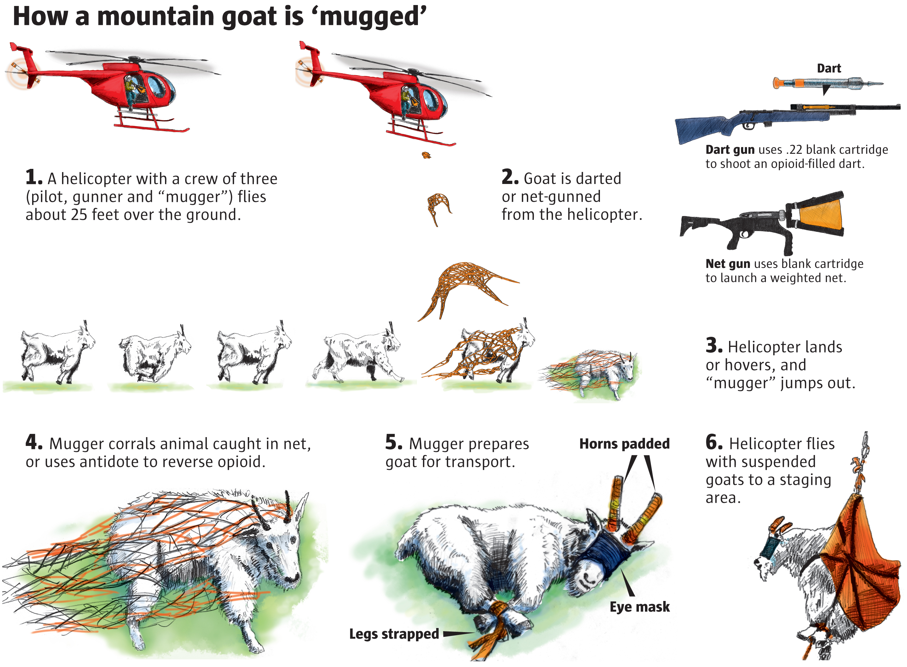
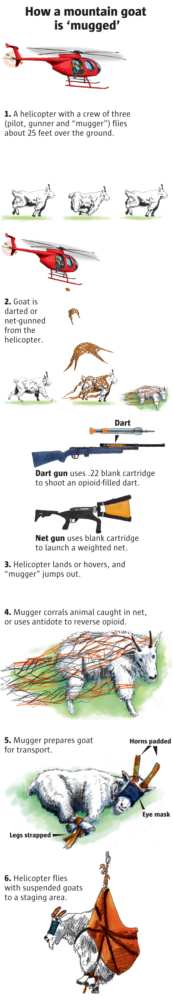
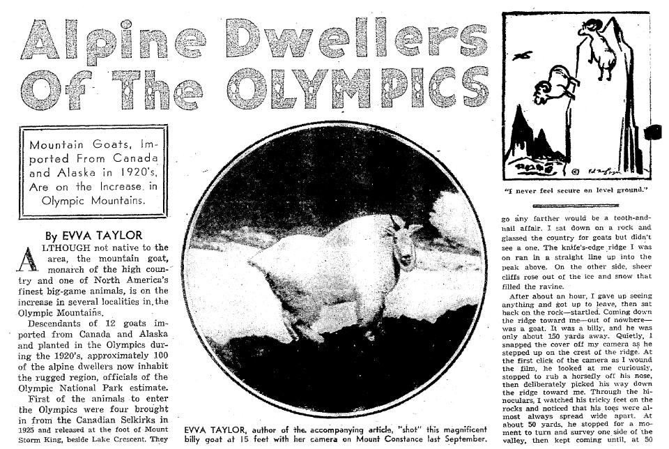
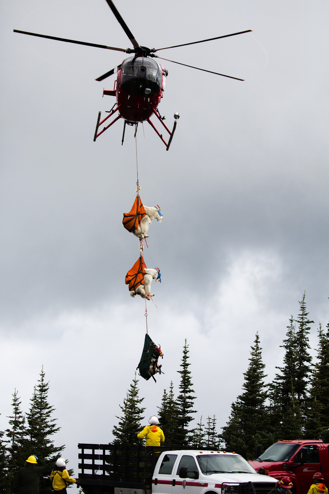
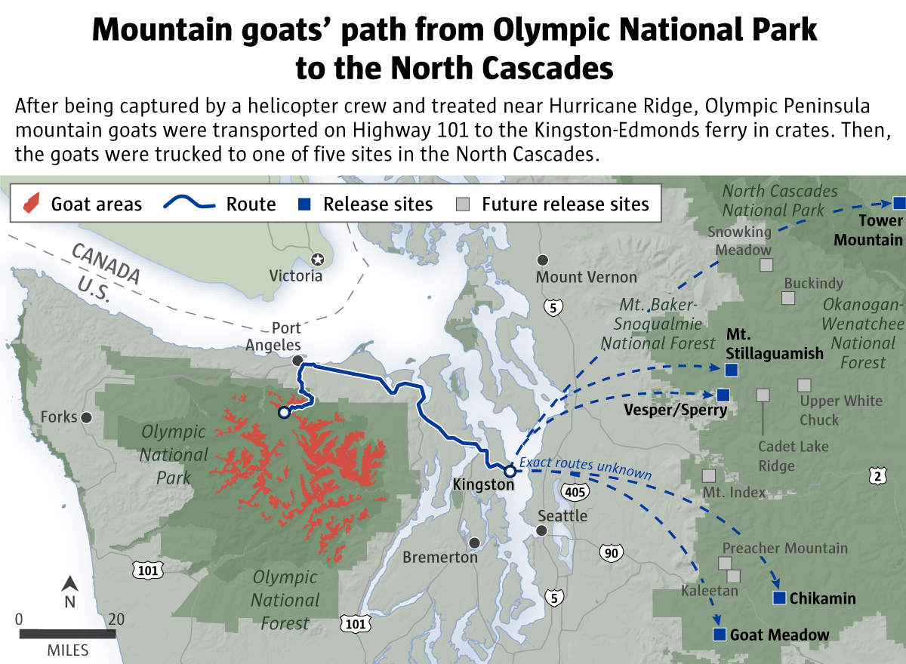
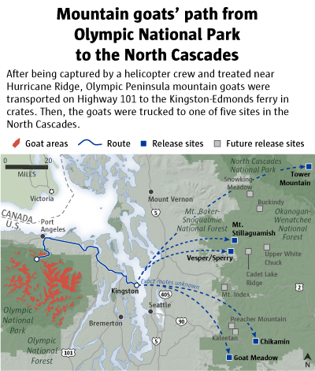
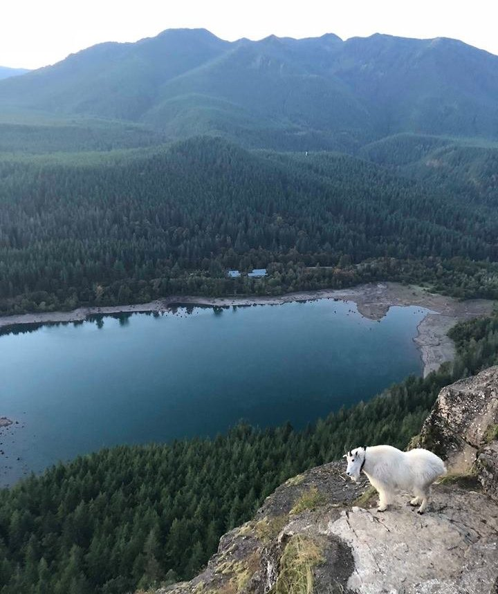
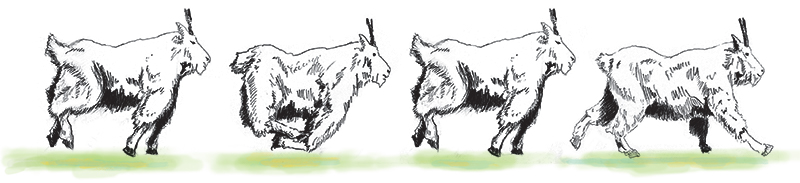

<%= t.renderMarkdown(archieml.story.section1) %>


(Reporting: Evan Bush, Graphic: Mark Nowlin / The Seattle Times)
<%= t.renderMarkdown(archieml.story.section2) %>

For this February 1948 article, Olympic National Park officials told The Seattle Times an estimated 100 goats lived in the Olympic mountains. Four goats came from the Canadian Selkirks in 1925, according to the article. Eight arrived from Alaska in 1929 in an exchange for Olympic Roosevelt elk calves. Most goats were released at Mount Storm King, beside Lake Crescent. Locals thought the goats had died, but noticed white forms on high crags in the early 1930s. (The Seattle Times)
<%= t.renderMarkdown(archieml.story.section3) %>
<%= t.include("_prerollVideo.html", { file: "1_Capture_loop.mp4", id: "5845057725001", runtime: "0:57" }) %>
Goats are captured at Olympic National Park and taken by helicopter to relocation crews. (Ramon Dompor / The Seattle Times)
<%= t.renderMarkdown(archieml.story.section4) %>

Wearing eye masks, horn pads and leg straps, goats dangle from a helicopter. (Ramon Dompor / The Seattle Times)
<%= t.renderMarkdown(archieml.story.section4b) %>
<%= t.include("_prerollVideo.html", { file: "2_Veterinary_loop.mp4", id: "5845057475001", runtime: "1:20" }) %>
Veterinary staffers check over the goats’ health, take samples and tag their ears. (Ramon Dompor / The Seattle Times)
<%= t.renderMarkdown(archieml.story.section5) %>
<%= t.renderMarkdown(archieml.story.section6) %>


Source: National Park Service (Emily M. Eng / The Seattle Times)
<%= t.renderMarkdown(archieml.story.section7) %>
<%= t.include("_prerollVideo.html", { file: "3_Release_loop.mp4", id: "5845053912001", runtime: "1:40" }) %>
Goats spring from their crates as they’re released into their new home, the Cascade Mountains. (Ramon Dompor / The Seattle Times)
<%= t.renderMarkdown(archieml.story.section8) %>
<%= t.include("partials/_ad.html", { type: "square" }) %>
<%= t.renderMarkdown(archieml.story.section8b) %>

A mountain goat that once lived at Olympic National Park took up temporary residence at Rattlesnake Ledge, a popular destination for hikers near North Bend. The goat was not afraid of people and not aggressive, but it got within about 12 feet of people, said hiker Hella Döge. "The goat was actually following us. Everyone shuffled around and tried to keep distance from the goat," she said. (Photo courtesy of Hella Döge)
<%= t.renderMarkdown(archieml.story.section9) %>

(Mark Nowlin / The Seattle Times)